Luke 16:24
¶ Well, a hot engine and the Rich Man who cried have one thing in common. They both want to cool that flame with water. We can't do much for the Rich Man, he made his choice and now he has to live with it. However, we can cool our engines with water.
I never really liked water cooling. Fins just look so pretty and water jackets so ugly. But, water cooling is here to stay and it is pretty simple. Most all water cooled engines have a radiator, thermostat, fan, pump, and the connecting hoses and pipes. The fans are usually controlled by a heat activated, thermostatic switch located in the radiator. For the most part they are trouble free, but there are a few things you need to know.
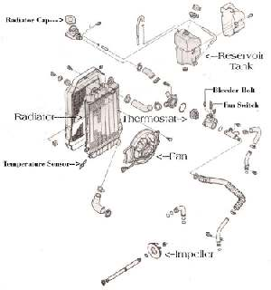
Always run antifreeze, in a 50/50 mix, in the radiator. If you use water and forget to put antifreeze in and things freeze... it could crack your engine block/cylinder and ruin your engine. Always use a motorcycle type antifreeze or a car type without silicates. Some car types contain silicates that can accelerate wear on your water pump. This probably doesn't matter for dirt bikes because they just don't put on that many miles, but in a street bike it's important. Use an antifreeze designed for an aluminum engine without silicates. There are several brands on the market, just read the label. Always use distilled water, if possible. This cuts down on the buildup of mineral salts that can coat the inside of the radiator, cutting down it's efficiency. It's also a good idea to replace the hoses every couple of years they tell me but I don't think very many people do. It's still a good idea. Same with the antifreeze fluid too.
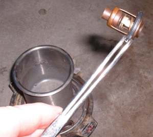 Closed Thermostat |
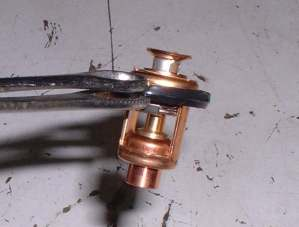 Open Thermostat |
If things start running hot and the fluid level is ok, check the thermostat. You can check it by suspending the thermostat in a pan of water with a thermometer. Then heat the water and see if it opens at the temperature that's marked on the thermostat. If it does, check to see if the pump is pumping. Take the radiator cap off and look down the fill tube. Not the overflow (coolant reservoir) tank cap, but the pressure cap on the radiator. Do this with the thermostat out and you should be able to see the fluid flow through the radiator. You could do it with the thermostat in but you have to let everything heat up so the thermostat will open. Could be fun! If there is flow, then the pump is working, check for a plugged radiator. Some you can fix and others you have to replace and they're not cheap.
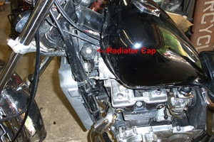 Radiator Cap Left Side |
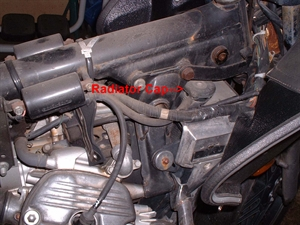 Radiator Cap Right Side |
If the temperature goes up just when you are idling at a stop light and the fluid level is OK, check it see if the fan works. Sometimes you can just ground the wire going to the fan thermostat switch, or pull the wires at the fan and connect them directly to the battery. If the fan works, replace the sending unit.
You can run without a thermostat but it's not a good idea because the thermostat controls the flow of water from the radiator to the engine. Some old line mechanics theorize that if the flow is too fast, the water doesn't stay in the radiator long enough to cool off so your engine could end up running too hot. Others disagree and feel the engine will run too cold and never reach operating temperature. It may depend on how efficient the system is to begin with. Also, when starting from cold, it would keep the engine too cold, as the engine would have to heat up all the coolant in the radiator as well as the engine coolant. Take your pick, but all agree you need a thermostat to keep the engine temperature right.
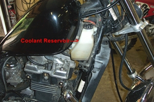 Coolant Reservoir |
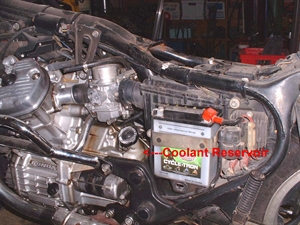 Coolant Reservoir |
Most Cooling Systems have a Coolant Reservoir Tank, also called a Recovery or Overflow Tank. This tank catches coolant that overflows from the radiator when it is hot then, as the engine cools, the coolant is sucked back into the radiator. Radiators operate under pressure. The Radiator Cap holds the pressure in until it reaches whatever pressure the cap is set for, usually ten to twenty pounds. When the engine gets hot from running, the internal pressure of the Radiator goes over the pressure of the Radiator Cap. The cap then releases that pressure into the Coolant Over Flow Tank.
When the radiator is full of Anti-Freeze the Anti-Freeze is vented into the overflow tank. When the engine is turned off and everything cools down the Anti-Freeze is sucked back into the Radiator. The Over Flow Tank should have just a bit of Anti-Freeze in it when cold. There is usually a line on the tank. Keep the coolant level at this line. That way it has room for the over flow when hot but still has all the Anti-freeze the Radiator needs when it is cold.
When you refill your radiator with new coolant remember to recheck the coolant level in the radiator again after you have run the engine up to operating temperature and then allowed it to cool off. Also recheck the fluid in the overflow tank too.
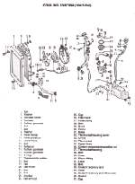
If you start your engine and water starts coming out the radiator cap you might have a blown head gasket or a cracked head. Somehow combustion pressure is getting into the cooling system. Of course, not always... people tell me all the time I've got a cracked head, but I ride an air cooled BMW, and I've checked. Its head is not cracked... I wonder what they mean?
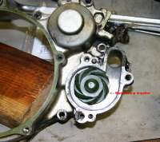 Water Pump Impeller Single Cylinder |
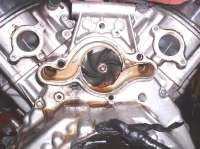 Water Pump Impeller Two Cylinder |
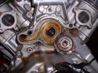 Water Pump Impeller Two Cylinder Back Side |
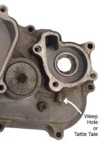
You may have more that one radiator. Many dirt bikes have two.
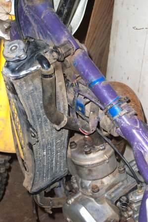 One Radiator |
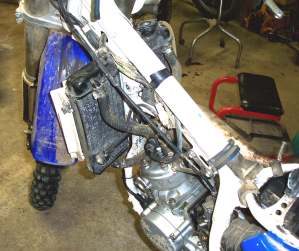 Two Radiator |
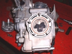 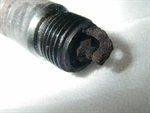
If your head gasket is leaking a bit it can foul out your spark plug.

Heads and Cylinders are cooled with water through passages in the cylinder. Sometimes they have O-Rings for head gaskets.
Most Fans are electric and a sensor on the radiator tells the Fan when to turn on or off. Some Fans are mounted on an engine driven shaft and can break like this one from a CX500 Honda.
Do not get the anti-freeze on painted surfaces. It could harm the paint. Also remember that anti-freeze is very poisonous. Do not leave pans of it sitting around where unauthorized personal (Like pet dogs) could get into it.
Mineral salts can build up in the radiator and in the internal engine passages. This can really cut down the amount of heat transferred from the engine to the coolant and then from the coolant to the radiator. This makes the engine run hot. To remove these salts, drain the radiator and refill it with plain tap water. Now add some Oxalic acid to the water. How much? That's hard to say. If the system holds a gallon or two of coolant use maybe a pint of the Oxalic. If it holds less, use six or eight ounces. Now run it for hour or so and then drain and fill the system with water. Add a box of Baking Soda to the water and run the engine for another ten or fifteen minutes. The Baking soda neutralizes the acid. Drain and flush the radiator with fresh water and then refill it with 50/50 distilled water and anti-freeze. Mix the acid water and baking soda water together and maybe add some more baking soda to completely neutralize the acid to a PH of 7.0. Now dispose of it in accordance with EPA regulations! Remember, this is acid even if it is diluted... don't get any on you. If you do, rinse with plenty of water and baking soda.
I heard this the other day, and it sounds like it might be true. Acid builds up in the coolant over a long period of time. This can make the radiator act like a big battery so to speak. Hook a volt meter with the positive lead to the positive on the battery and then stick the negative lead in the coolant. Do this at the radiator cap and don't touch the sides of the radiator, just the coolant. If it reads more than three tenths of a volt MORE that battery voltage, Replace the coolant. There's too much acid built up in it. I'll have to run a few tests on this but it sounds good to me.
All this is a big pain in the rear. I think it was Jay Leno who said "I don't trust any bike I can't see through". I heartily agree.
Click Here
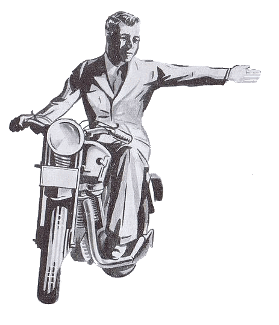 |
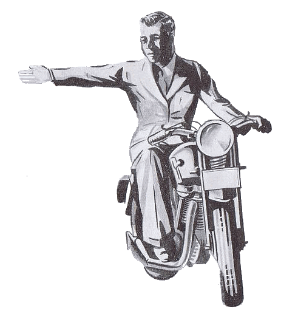 |
Copyright © 1999-2015 dansmc.com. All rights reserved.